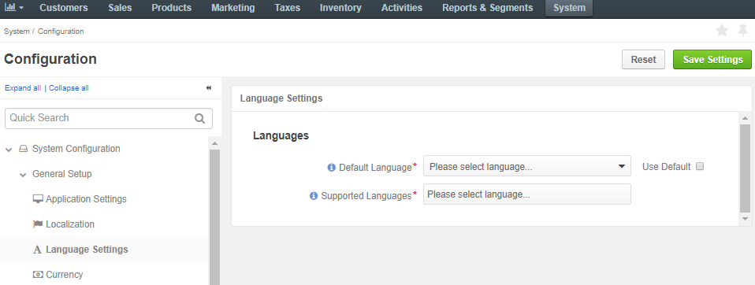
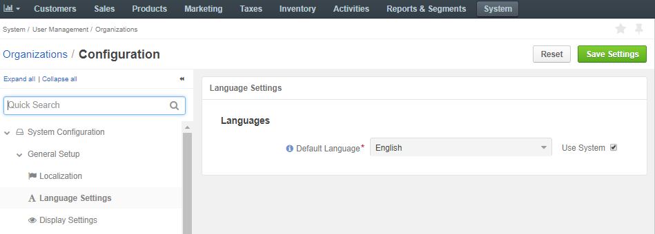
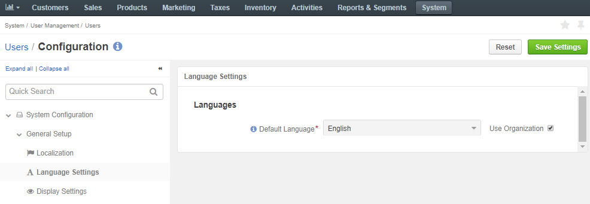

In the system configuration, you can set up the language of the UI elements to be displayed in the management console and the supported languages for the email notifications for the users. If there is an email template for the supported language, the users who have selected that specific language on the storefront, receive localized notifications.
The language settings are available on three levels: globally, per organization, and per user. The configuration steps are provided below:
To define the default system language and supported languages for email notifications:
Navigate to the language settings:
Click System > Configuration in the main menu.
In the System Configuration menu to the left, expand General Setup and click Language Settings.
Note
For faster navigation between the configuration menu sections, use Quick Search.
The following page opens:
Select one or multiple supported languages from the list that can be used for translation of the Oro application management console content (e.g. email notifications). Make sure to enable the corresponding languages in the System > Localization > Languages menu to make them available in the list. Refer to the Languages section for more details.
Clear the Use Default check box and select the default language for the UI elements displayed in the management console.
Click Save Settings to save the settings.
To define the default system language for the particular organization:
Navigate to System > User management > Organizations in the main menu.
For the necessary organization, hover over the More Options menu to the right and click to start editing the configuration.
Select System Configuration > General Setup > Language Settings in the menu to the left.
Note
For faster navigation between the configuration menu sections, use Quick Search.
The following page opens:

To define the default system language for the particular organization:
Navigate to System > User management > Users in the main menu.
For the necessary user, hover over the More Options menu to the right and click to start editing the configuration.
Select System Configuration > General Setup > Language Settings in the menu to the left.
Note
For faster navigation between the configuration menu sections, use Quick Search.
The following page opens:
